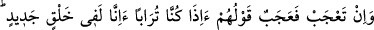
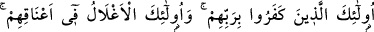
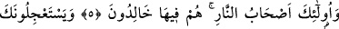
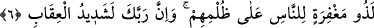
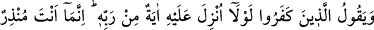
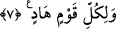

ASIL ŞAŞILACAK ŞEY
5. (Rasûlüm! Kâfirlerin seni yalanlamalarına) şaşıyorsan, asıl şaşılacak şey
onların: “Biz toprak olduğumuz zaman yeniden mi yaratılacağız?” demeleridir. İşte
onlar, Rablerini inkâr edenlerdir; işte onlar (kıyamet gününde) boyunlarında
tasmalar bulunanlardır. Ve onlar ateş ehlidir. Onlar, orada ebedî kalacaklardır!
6. (Müşrikler) senden iyilikten önce kötülüğü acele istiyorlar. Halbuki onlardan
önce ibret alınacak nice azap örnekleri gelip geçmiştir. Doğrusu insanlar
zulmettikleri halde Rabbin onlar için mağfiret sahibidir. (Bununla beraber)
Rabbinin azâbı da çok şiddetlidir.
7. Kâfirler diyorlar ki: Ona Rabbinden bir mûcize indirilseydi ya! (Halbuki) sen
ancak bir uyarıcısın ve her toplumun bir rehberi vardır.
Ey Muhammed ya da ey dinleyici! Herhangi bir şeye “şaşıyorsan asıl şaşılacak şey
onların:” Yani bu şaşkınlığın, müşriklerin şu sözlerinden olsun: “Biz toprak
olduğumuz zaman yeniden mi yaratılacağız?” Acaba biz toprak olduktan, yâni
öldükten sonra yeniden yaratılır mıyız? Toprak olduğumuz zaman diriltilip yeniden mi
yaratılacağız? “demeleridir” Şaşkınlıkla böyle söylemeleridir.
Bazıları bu ifadeyi şöyle açıklıyor: Cenab-ı Hakk’ın ilk defa yaratmaya kâdir
olduğunu kabul etmiş olmalarına rağmen müşriklerin öldükten sonra dirilmeyi inkâr
etmelerine ve putlara tapınmalarına şaşıyorsan bu gerçekten şaşmayı hak eden bir
durumdur. Yani onların bu tutumları şaşılmaya lâyık bir durum olduğu için şaşma fiilini
yerli yerinde yapmış bulunuyorsun. Çünkü bütün mahlûkatı ilk defa yaratmaya kâdir
olan, tekrar yaratmaya elbette kâdir olacaktır!
O ki yoktan var etmek O’nun işidir,